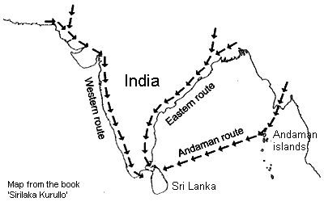

tour with Josh tours in sri lanka
It's all about happiness...

It's all about happiness...
According to the geographical location in the Indian Continent, the land of Sri Lanka is situated at the extreme southern point beyond the south of India.
The stretch of ocean from here to the south pole contains no other land. Hence, for the migrant birds that travel south from India, Sri Lanka is the final destination.
There are 3 flying routes across India along which immigrant birds come to Sri Lanka. These are - the western route, the eastern route and the Andaman Island route.
From the northern and northwestern parts of the world along the western coastal line of India, then towards the extreme south of India, which is commarin point. Then they fly across this coast and arrive in Sri Lanaka mostly across this coastal line between Mannar and Kaluthara.
The migrant birds take this route initially from Europe, West Asia including western Siberia, & from the western regions of Himalaya including Kashimir.
From the northern and northeastern parts of the world, along the Eastern coast line of India, towards the south. Passing the coastline between Kalmier point and Ramesvaran, which is further south these migratory birds arrive in Sri Lanka from India, from East Asia which includes eastern Sibiria and Mongolia, from the Eastern regions of Himalaya including Tibet, these migratory birds fly along this route initially.
Apart from the above-mentioned two routes there is still another route to the North Eastern coast of Sri Lnaka, which is the Andaman Islands flying route. This route falls across the Andaman Islands in the Indian Ocean. It is believed that these migratory birds arrive in Sri Lanka along this route from south East Asia and the East each year.
Each year the migratory season commences in October and ends in April - May in the following year. Very often, the birds take the same route they arrived. However, some birds return along different routes.
The departure of these birds flying across Kalpitiya in large flocks is a fascinating sight. The beauty of thousands of birds departing at the same time from dew-drop shaped Jaffna as they leave the country is an unforgettable memory, etched in the minds of those who experience this splendid sight.
For further details please contact.